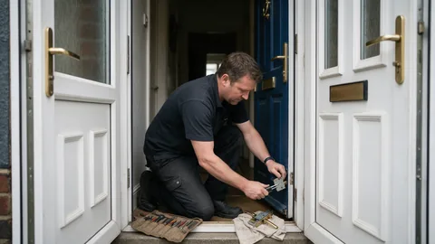
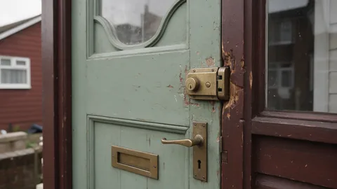
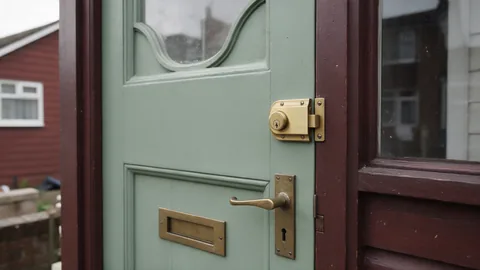
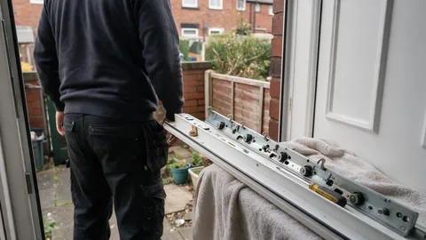
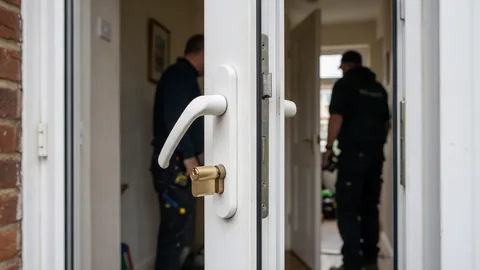
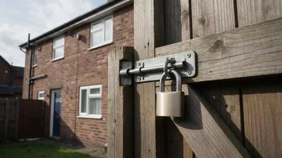
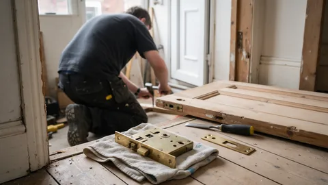
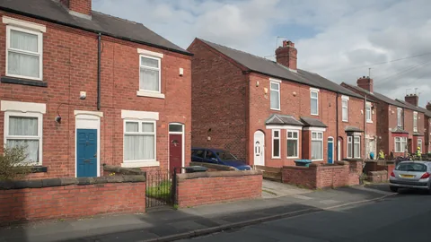
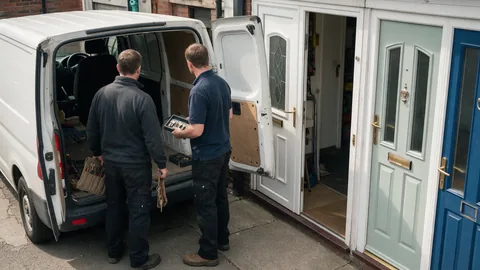

Photo credits
Where the pictures come from.
Every picture on this site was generated for this demo. None of them shows Latchwick's work, because Latchwick does not exist, and none of them is a photograph of a real door, a real job or a real person.
| What it shows | Where it came from | Used for | |
|---|---|---|---|
 | The locksmith at an open front door used on the home page and the work page | Generated for this demo | Illustrative only |
 | The 'before' half of the slider: a worn lock on a timber door with a scarred frame | Generated for this demo | Illustrative only |
 | The 'after' half of the slider, generated from the 'before' picture so it is the same door | Generated for this demo | Illustrative only |
 | A locksmith at a closed uPVC door in the evening, used on the lockouts page | Generated for this demo | Illustrative only |
 | A key snapped off in a cylinder being extracted, used on the lockouts page | Generated for this demo | Illustrative only |
 | A front door at night with a van at the kerb, used on the urgent page and the lockout article | Generated for this demo | Illustrative only |
 | An old and a new door cylinder side by side, used on the lock changes page | Generated for this demo | Illustrative only |
 | A key cutting machine with a blank in the jaws, used on the work page | Generated for this demo | Illustrative only |
 | Freshly cut keys on a workbench, used on the moving house article | Generated for this demo | Illustrative only |
 | The multipoint strip out of the edge of a uPVC door, used on the uPVC page and the work page | Generated for this demo | Illustrative only |
 | A uPVC door standing open with the lever handle close up, used on the uPVC article | Generated for this demo | Illustrative only |
 | A splintered door frame with a new keep plate ready, used on the break in page | Generated for this demo | Illustrative only |
 | Plywood screwed over a damaged door panel, used on the break in page | Generated for this demo | Illustrative only |
 | A key operated window lock being fitted, used on the window locks page | Generated for this demo | Illustrative only |
 | A closed shackle padlock on a side gate, used on the window locks page | Generated for this demo | Illustrative only |
 | A small domestic floor safe open on a garage floor, used on the safes page | Generated for this demo | Illustrative only |
 | A mortice lock out of the edge of a timber door, used on the lockouts page | Generated for this demo | Illustrative only |
 | A street of Salford terraced and semi detached houses, used on the areas pages | Generated for this demo | Illustrative only |
 | Two locksmiths at a van tailgate, used on the about page | Generated for this demo | Illustrative only |
The rest of it
Everything else on the page is drawn in the browser: the brand mark, the icons, the key rule under each heading and the diagram of what is inside a uPVC door. No stock photography, no clip art and no third party images.
Nobody in any picture is identifiable, and no van, sign, packaging, lock, key or workwear carries a real name or logo. Every file is a WebP under 200 KB.
One thing we left out on purpose
There is nothing on this site that shows how to get past a lock. No close ups of a tool in a keyway, no step by step, nothing that would be any use to somebody who should not be at your door. That is a deliberate choice rather than an oversight, and we would say the same about a real locksmith's website.
The words
All the copy on this site was written for this demo. The firm, the people, the jobs and the reviews are invented. Anything factual, like how a uPVC door locks or why a frame gives way before a lock does, is general trade knowledge rather than advice on your property.
The numbers
The firm's number, 01632 960605, comes from the range Ofcom keeps for television and film, so it rings nobody. The email address ends in .example, which cannot receive anything. The only real number anywhere on this site is Clockwork's own, 07460 038202, in the bar at the top and the note at the bottom, and it is labelled as Clockwork's rather than the firm's.
Want one like this for a real firm?
Ring Clockwork on the number in the bar at the top of the page. This demo is here to show what gets built, not to sell a lock change.